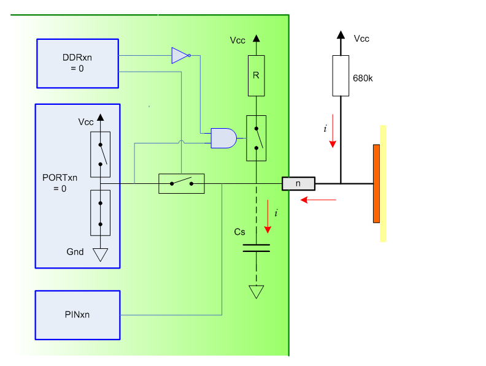

Do danas su razvijeni raznorazni senzori na dodir, počevši od čisto vodljivih tipova apliciranih na televizijskim aparatima osamdesetih godina prošlog stoljeća, pa preko optičkih, do današnjih otporničkih i kapacitivnih koji se koriste na modernim mobilnim telefonima. Njihov razvoj i primjena uvjetovana je razvojem tehnoloških postupaka i elektronskih komponenti a veliki napredak je napravljen masovnom produkcijom i primjenom mikrokontrolera. Kapacitivna metoda detekcije dodira danas je najraširenija koristi se gotovo na svim elektronskim uređajima počevši od kontrolnih panela u kabinama za tuširanje do prijenosnih računala i mobitela. Mnogi proizvođači elektronskih komponenti u svom proizvodnom programu imaju integrirane krugove koji omogućavaju razvoj dodirnog sučelja. Na zadovoljstvo mnogih zaljubljenika elektronike ona je aplikativna na najmanjim mikrokontrolerima i ovdje je opisana jedna jednostavna metoda na mikrokotroleru Atmel ATtiny2131
{kind=link}
Princip rada
Osnovni princip rada kapacitivnih senzora osjetljivih na dodir je promjena kapaciteta područja dodira. Metoda detekcije promjena je različita a ovdje će se objasniti metoda koja je uobičajena u većini mjerača kapaciteta a radi se integracijskoj metodi mjerenja. Algoritam metode je usporedba vremena trajanja nabijanja kondenzatora poznatog kapaciteta sa vremenom nabijanja nepoznatog a na osnovu njihovog omjera se izračunava kapacitet nepoznatog kondenzatora. Za primjenu metode kod dodirne tipke nama treba samo sigurna detekcije promjene kapaciteta i to je osnovni zahtjev jer je promjena kapaciteta vrlo mala.Poznato je iz osnova elektrotehnike da svaka elektronska komponenta pa tako i mikrokontroler odnosno njegov I/O port posjeduje parazitni kapacite i on se koristi kao etalonski kondenzator Cs. Nepoznati kondenzator Cx je kapacitet ljudskog tijela koji po modelu za ESD ima kapacitet do 100 pF i koji se formira kada se prstom dodirne metalna površina izolirana nekim tankim izolatorom. Ako za mikrokontroler izaberemo ATTiny2313 odnosno parazitni kapacitet je oko 15 pF i prijelazna pojava punjenja toga kondenzatora na napon koji se detektira kao logička 1 ( a to je po specifikacijama 2,65 V kod napajanja 5V) traje oko 9 mikrosekundi. Ako kao jednu elektrodu drugog kondenzatora pripremimo područje bakra na tiskanoj pločici površine 16×16 mm to vrijeme punjenja se produžuje na oko 16 mikrosekundi i to je ta vremenska razlika koju moramo iskoristiti kao detekciju dodira odnosnu “pritisnute” tipke.
Da bi osigurali detekciju promjene kapaciteta poslužit će mo se standardnim I/O portom mikrokontrolera Atmel ATTiny2313 jer on sadrži sve električne i programske komponente potrebne za to. Koristit ćemo registre DDRx.n, PORTx.n i PINx.n gdje x označava korišteni port (A,B ,C, D) dok n označava broj bita porta(0-7). DDR registar služi za definiranje da li će port biti korišten kao ulazni ili izlazni. Ako je njegova vrijednost 0 port se koristi kao ulaz te će registar PORT biti odspojen od pina mikrokontrolera tako da stanje registra PORT neće imati utjecaja na stanje pina. Druga namjena DDR registra je uključivanje pull-up otpornika koji su integrirani u mikrokontroler. Ako je port definiran kao ulaz (DDRx.n=0) s registrom PORTx.n se uključuje (PORTx.n=1) odnosno isključuje (PORTx.n=0) navedeni otpornik. Osnovna namjena registra PORTx.n je jasno odnosno on spaja pin mikrokontrolera na Vcc odnosno Gnd ako je I/O port definiran kao izlaz (DDRxn=1). Namjena Registar PINx.n je uvijek ista a to je da čita logičko stanje pina mikrokontrolera. Od ostalih vanjskih komponenti potrebna nam je jedan otpornik preko kojeg ćemo trajno spojiti pin mikrokontrolera na Vcc napajanje te površina bakra tiskane pločice koja će služiti kao jedna ploča kondenzatora odnosno imati ulogu senzora i ova površina mora biti pokrivena nekim izolatorom.
{kind=link}
Navedene komponente će nam poslužiti za generiranje dva osnovna stanja a to je pražnaje i punjenje kondenzatora. Pražnjenje se ostvaruje na način da se stanje registra PORTx.n postavi u logičku nulu a potom se stanje DDRx.n registra promjeni u logičku jedinicu. Na taj način će se pin mikrokontrolera postaviti u nulu što će rezultirati pražnjenjem kondenzatora Cs. i sada je sustav spreman za mjernu sekvencu. Postavljanjem DDRx.n registra u logiču nulu odspaja se pin mikrokontrolera od PORTx.n registra te je omogućeno punjenje kondenzatora preko vanjskog otpornika R.
{kind=link}
Istovremeno s početkom punjenja aktivira se mjerenje vremena i čitajući stanje registra PINx.n provjerava se logičko stanje ulaza odnosno napon na kondenzatoru. Kada je vrijednost PINx.n registra logička jedinica zapamti se vrijeme punjenja i to etalonsko vrijeme i označava stanje “dodir nije detektiran” odnosno “tipka nije stisnuta”. Kada se prstom dodirne površina “senzora” na tiskanoj pločici spaja se kondenzatoru Cs još jedan Cx (paralelno) a vrijeme potrebno da se detektira logička jedinica registra PNx.n se produžava. To prekoračenje prije izmjerenog etalonskog vremena omogućava da se detektira prisutnost prsta na senzoru odnosno stanje “taster je stisnut”.
{kind=link}
Programska izvedba
{kind=link}
Gore opisane sekvence vrlo je jednostavno izvesti i to ćemo napravit u BASCOM programskom jeziku. Na početku je potrebno izmjeriti vrijeme da se parazitni kondenzator Cs bez prisutnosti prsta na senzoru nabije na logičku jedinicu i to spremiti u varijablu TouchTreshold. Učiniti ćemo to u DO… LOOP u petlji u koji će biti sekvenca pražnjenja kondenzatora (2 milisekunde), početak punjenja, čekanje od TouchTreshold mikrosekundi te provjeravanje da li je pin u logičkoj jednici. Poslije toga na početku slijedeće iteracije petlje povečavamo varijablu TouchTreshold za 1. Kada se detektira logička jedinica na pinu izlazimo iz DO ..LOOP petlje i trenutna vrijednost varijable TouchTreshold je prije spomenuto etalonsko vrijeme . Tom vremenu dodajemo još 2 mikrosekunde da bi sa sigurnošću detektirali neprisutnost prsta.
DO TouchTreshold = TouchTreshold + 1 DDRD.3 = 1 : PORTD.3 = 0 ' prazni waitms 2 PORTD.3 = 0 : DDRD.3 = 0 ' start punjenja waitus TouchTreshold IF PIND.3 = 1 THEN ' provjera napunjenosti TouchTreshold = TouchTreshold + 2 EXIT DO endif LOOP |
Nakon što smo ovo napravili možemo u glavnom programu skenirati sve naše senzor, detektirati dodir i izvršiti određene akcije. Program je sličan inicijalizacijskom dijelu samo što ovdje kao rezultat na provjeru napunjenosti palimo ili gasimo signalizacijsku diodu. Dakle nakon što smo ispraznili kondenzator počinjemo ga puniti te testiramo da li je on pun nakon vremena koje je dobiveno u inicijalizacijskoj sekvenci. Ako je nakon toga vremena pin nije logičkoj jedinici znači da je ukupni kapacitet koji se puni veći od parazitnog kapaciteta Cs odnosno površina senzora je dotaknuta prstom. U listingi programa je kod samo za 1 kanal i koristi se pin 7 (PD3) kao senzor a pin 18 (PB6) kao indikacija dodirnutog senzora.
LED1 ALIAS PORTB.6 DO ' Channel 1 DDRD.3 = 1 : PORTD.3 = 0 ' prazni waitms 2 PORTD.3 = 0 : DDRD.3 = 0 ' start punjenja waitus TouchTreshold IF PIND.3 = 0 THEN ' provjera napunjenosti LED1=1 ELSE LED1=0 endif LOOP |
Praktična realizacija
Kao prototip je napravljena tipkovnica s četiri dodirne tipke. To je ustvari elektronski modul koji bi trebao zamijeniti četiri standarne tipke na malom operatorskom panelu u mojem projektu kučne automatizacije. Svaka dodirna tipka ima svjetlosnu indikaciju kao povratnu informaciju “pritiska” tipke. Upotrebljeni mikrokontroler je ATtiny2313 a sam modul nema stabilizirano napajanje već se napaja s 5V iz uređaja na kojem će biti. Izlazni signali su četiri digitalna izlaza koji poprimaju stanje dodirne tipke a pomoću kratkospojnika na pinu 3 (PD1) može se definirati signal “pritisnute” tipke . Izlazni signal da je tipka “pritisnuta” bit će onog logičkog nivoa koji je trenutno na pinu 3.

Tipkovnica je napravljena na dvostranom tiskanoj pločici tako da su na gornjem layeru dodirni senzori odnosno bakrene površine velićine 16×16 milimetara. Ostali elementi su smješteni odozdola te su, iako standarne veličine, lemljeni su kao smd elementi dok bi finalna variajanta svakako trebala biti prava smd. Žice koje se vide su za napajanje (plava i crvena) i za eksterni ISP programator.

Električna shema je jedostavn i iz nje se vidi da je korišten ATtiny2313 s vlastitim generatorom takta i rudimentarnim reset krugom. Otpornici na senzorima dodira su 680 kilooma i njihova vrijednost je utvrđeni eksperimentalno. Oni ovise površini dodirnog senzora te debljine i tipu izolacije (prednje maske) pa će te vjerojatno njih morati utvrditi eksperimentalno u neki drugim izvedbama. Prototipni modul je u fazi testiranja radio vrlo pouzdano ali nije testiran u težem radnom okruženu (što mu nije bila ni namjena).
{kind=link}
Datoteku koja sadrži shemu, tiskanu pločicu, izvorni te izvršni kod možete skinuti ovdje: TouchKeypad_quercus-lab